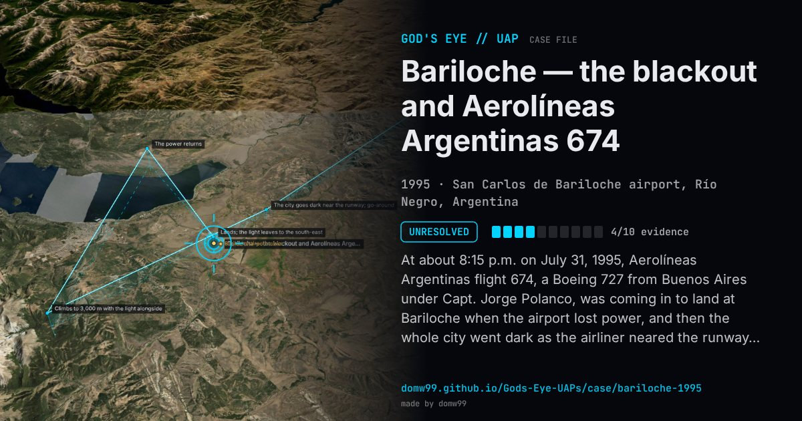

Bariloche — the blackout and Aerolíneas Argentinas 674

At about 8:15 p.m. on July 31, 1995, Aerolíneas Argentinas flight 674, a Boeing 727 from Buenos Aires under Capt. Jorge Polanco, was coming in to land at Bariloche when the airport lost power, and then the whole city went dark as the airliner neared the runway, forcing a go-around. A light “between white and amber”, like a star but much larger and brighter, then flew on a parallel course about 100 metres from the plane. When the power came back the 727 climbed to 3,000 metres, descended and landed, and the light left at full speed toward the south-east. The tower chief and the crew of a Gendarmería Cheyenne flying 600 metres higher saw it too, and the tower’s instruments swung from one direction to another for no clear reason. Interviewed in 2026, Polanco said: “It pursued us, accompanied us for 17 minutes.”
Explanation
No explanation was found. Carlos Angueira, president of a local astronomy association, rejected a meteorite or a refraction, saying such things cannot “stop in the middle of the sky”. The case drew new attention in 2026, when it appeared among the Latin American incidents in UAP files released by the Pentagon.
What was seen
Shape: A light between white and amber, like a star but much larger; later described as green and white, about 30 m across
Witnesses: Capt. Jorge Polanco, his crew and passengers; the tower chief, Daniel García; the crew of a Gendarmería Cheyenne
Duration: 15–17 minutes
Sources
- Infobae — “It pursued us for 17 minutes” (2026, in Spanish)
- UFOs at close sight — Clarín, August 2, 1995 (translated)
Browse
- Argentina
- 1990s
- Unresolved
- Aviation encounters
- Many independent witnesses
- Pilot and aircrew witnesses
- Reported electromagnetic effects
- Lights and fireballs